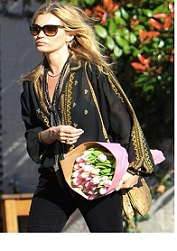
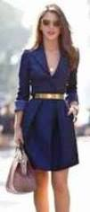
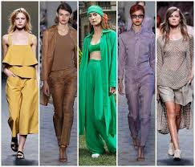
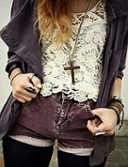
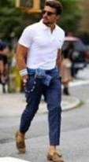
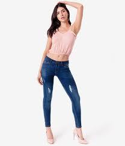
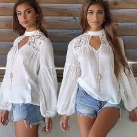

Moda
Una de las principales críticas hacia la industria de la moda está en el hecho de que una persona que adquiere una estética determinada, revelándose como singular y desviándose así de las corrientes de moda más comunes, en realidad está creando otra distinta
Estilo Boho
El estilo Boho es desde 2004, año en el que nació, probablemente el más copiado e imitado, aunque a la vez es el más difícil de replicar. Es algo así como un cóctel en el que se mezclan abundantes ecos hippies y bohemios, con un toque étnico –del navajo al arabesco– y otro toque campestre
  Estilo Hipster
Recreando una mirada inconformista el estilo “Hipster” obedece a la forma en cómo algunas mujeres combinan un estilo motorista con el grunge, boho, vagabundo y lo hippie, haciendo algo individual y original. Las prendas conjugan numerosas ideas de combinación de mezclas, calcetines hasta la rodilla, medias de lunares, tops frescos de rayas y grandes sombreros, etc. El estilo “Hipster” está en las calles, donde las chicas aparecen en prendas de vestir de estilo vintage muy fáciles de poner y cómodas. En otras palabras, todos estos elementos esenciales son ideales para haciendo que se vea especial y de moda
 Estilos casuales
La ropa Casual es la ropa informal: es decir, aquella que se utiliza en contextos que no exigen el respeto de un código de vestimenta formal. A la hora de escoger ropa casual para vestirse, por lo tanto, una persona no se ata a criterios rígidos de elegancia ni se preocupa por lograr un aspecto de seriedad. Aunque el estilo “Casual” se considera a todo aquello no solo que te permite vestir de manera cómoda sino también reflejar la personalidad e incluso poder lucir de una forma apropiada tanto para ir a trabajar como para ir de fiesta
 